<div class="middle center"> <div style="width: 100%"> # HPC Methodology <hr/> [Yusux](https://github.com/Yusux) @ [ZJUSCT](https://github.com/ZJUSCT) 2024/7/3 </div> </div> <!--v--> ## Today's Content - Basic Theories for HPC - Performance Analysis and Optimization Methodology - Practical Optimization Stretagies - HPC Skill Tree <!--s--> <div class="middle center"> <div style="width: 100%"> # 1 Basic Theories for HPC </div> </div> <!--v--> ## Factors Affecting Performance <div class="center">  </div> <!--v--> ## High-Level Models - Compute - Program, Function, Programming language, Computation Graph - lynn Models (SISD, SIMD, MISD, MIMD), SIMT - ... - Storage - Database: Relational, KV, Graph - Storage System: Block, Object, File - ... - Networking - I/O: Blocking, Signal-Driven, Asynchronous - Communication Mode: P2P, Collective Communication - ... <!--v--> ## Software: Implementation of Models - Host OS - Compute Library - BLAS, FFT - OpenMP, pthreads, TBB, Intel MKL, Nvidia CUDA - ... - Storage - File System: Local, Remote, Distributed - ... - Communication Library - MPI, Gloo, NCCL - ... <!--v--> ## Hardware: Operated by Software - Server - Processing Units - CPU, GPU, NPU, FPGA - Related: Cache, Memory - ... - Storage Hardware - HDD, SSD, NVMe - RAID - ... - Networking - Ethernet, IB - Smart NIC, DPU, IPU - ... <!--v--> ## Example: Matrix Multiplication - Algorithm Consider $Y = A \cdot B$, where $A, B$ are huge matrices $$ AB_{ij} = \sum_{k=1}^{n} A_{ik} \cdot B_{kj} $$ <div class="center"> 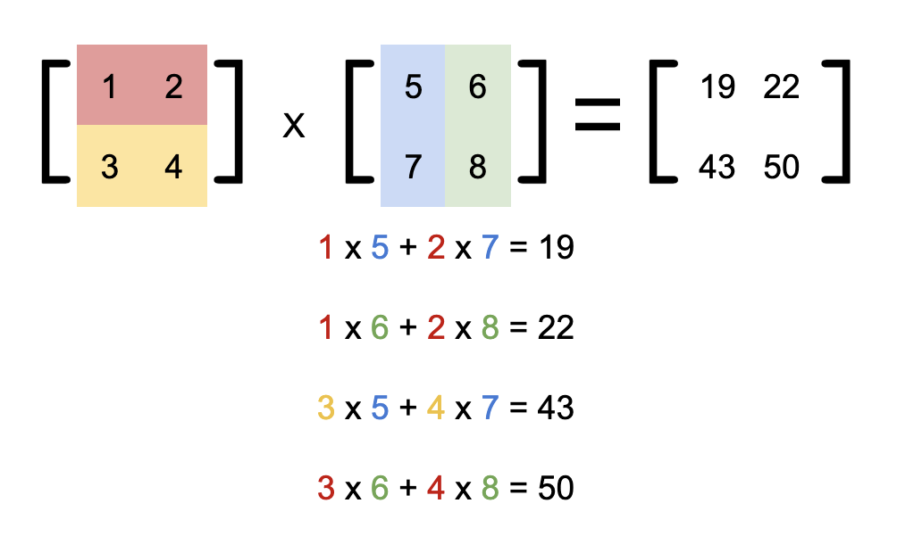 </div> <!--v--> ## Example: Matrix Multiplication - Models We decide to run it in parallel - Assuming we divide it into 3 small matrix multiplication tasks - Compute on 3 different processing units - Distribute workload & gather results via network <div class="center"> 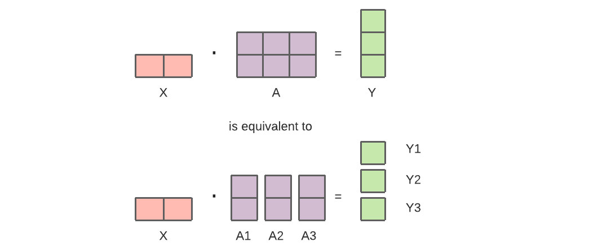 </div> <!--v--> ## Example: Matrix Multiplication - Software - For each small matrix multiplication - We use BLAS for efficient computing - For workload distributing & result gathering - We use MPI for communication <!--v--> ## Example: Matrix Multiplication - Hardware - We use BLAS on CPU/GPU - More efficient/powerful CPU/GPU -> higher performance - For computation, GPUs are usually faster - We use MPI on InfiniBand - Larger throughput & lower latency <!--v--> ## Example: Matrix Multiplication - Physics - All these hardware may be subject to physical limitations - Do not let them overheat or run out of power <!--s--> <div class="middle center"> <div style="width: 100%"> # 2 Performance Analysis and<br>Optimization Methodology </div> </div> <!--s--> <div class="middle center"> <div style="width: 100%"> ## 2.1 What is optimization? </div> </div> <!--v--> ### What is optimization? <div class="mul-cols"> <div class="col"> Before Manual Optimization: ```cpp #include <cstdio> long long fibonacci(int i) { if(i <= 2) { return 1; } else { return fibonacci(i - 1) + fibonacci(i - 2); } } int main() { int k = 5; printf("fib(%d)=%lld\n", k, fibonacci(k)); return 0; } ``` </div> <div class="col"> After Manual Optimization: ```cpp #include <cstdio> static constexpr long long fibonacci(int i) { return i <= 2 ? 1 : fibonacci(i - 1) + fibonacci(i - 2); } int main() { const int k = 5; printf("fib(%d)=%lld\n", k, fibonacci(k)); return 0; } ``` </div> </div> <!--v--> ### What is optimization? <div class="mul-cols"> <div class="col"> Before Manual Optimization: ```cpp #include <cstdio> long long fibonacci(int i) { if(i <= 2) { return 1; } else { return fibonacci(i - 1) + fibonacci(i - 2); } } int main() { int k = 5; printf("fib(%d)=%lld\n", k, fibonacci(k)); return 0; } ``` </div> <div class="col"> Compilation Result<br>(gcc 13.2.0, -O2): ```asm ... ;(omitted) 293 main: 294 sub rsp, 8 295 mov edi, 5 296 call _Z9fibonaccii 297 mov esi, 5 298 mov edi, OFFSET FLAT:.LC0 299 mov rdx, rax 300 xor eax, eax 301 call printf 302 xor eax, eax 303 add rsp, 8 304 ret ``` https://godbolt.org/z/rax365P1P </div> </div> <!--v--> ### What is optimization? <div class="mul-cols"> <div class="col"> After Manual Optimization: ```cpp #include <cstdio> static constexpr long long fibonacci(int i) { return i <= 2 ? 1 : fibonacci(i - 1) + fibonacci(i - 2); } int main() { const int k = 5; printf("fib(%d)=%lld\n", k, fibonacci(k)); return 0; } ``` </div> <div class="col"> Compilation Result<br>(gcc 13.2.0, -O2): ```asm .LC0: .string "fib(%d)=%lld\n" main: sub rsp, 8 mov edx, 5 mov esi, 5 xor eax, eax mov edi, OFFSET FLAT:.LC0 call printf xor eax, eax add rsp, 8 ret ``` https://godbolt.org/z/3KKcKEjWa </div> </div> <!--v--> ### What is optimization? <div class="mul-cols"> <div class="col"> After Manual Optimization<br>(another way): ```cpp #include <cstdio> int main() { puts("fib(5)=5"); return 0; } ``` <hr> Failed O2 Optimization<br>(k = 93, since $fib(93) > 2^{63}$): https://godbolt.org/z/YrYx3eKbz </div> <div class="col"> Another example<br>([Collatz Conjecture](https://en.wikipedia.org/wiki/Collatz_conjecture)): ```cpp bool collatz(int x) { while (true) { if (x <= 1) return true; if (x % 2) x >>= 1; else x = 3*x + 1; } } ``` ```asm _Z7collatzi: mov eax, 1 ret ``` https://godbolt.org/z/exfEjdshj </div> </div> <!--v--> ### What is optimization? > Mathematical optimization or mathematical programming is the selection of a best element, with regard to some criteria, from some set of available alternatives. [\[Wikipedia\]](https://en.wikipedia.org/wiki/Mathematical_optimization) For example, maximize/minimize $f(x)$ subject to $x \in \Omega$ - $x$: decision (selection within available alternatives) - $f(x)$: objective function - $\Omega$: constraints (criteria) <!--v--> ### What is optimization? (Back to HPC) In our case: <div class="mul-cols"> <div class="col" width="70%"> - Goal: Maximize performance - Speed - Throughput - Latency - ... - Criteria: Limited resources - Restricted hardware - Limited Power - Limited Quota - ... </div> <div class="col"> - Alternatives <div class="center"> <img src="main/HPCOptimizationAlternatives.svg" width="85%"/> </div> </div> </div> <!--s--> <div class="middle center"> <div style="width: 100%"> ## 2.2 Should I optimize? </div> </div> <!--v--> ### Should I optimize? - Is performance critical to my program? - One-time small programs, just run them slowly - I can wait till tomorrow to see the results, just play and wait for it - Is there room for optimization? - Performance Test - Optimization Space Analysis <!--v--> ### Performance Test Just directly run the program and see how long it takes (measured by wall time) ```cpp time_t start = get_time_hires(); // loop 100 times to get a more accurate result // by averaging the time for(int i = 0; i < 100; i++) { do_something(); } time_t stop = get_time_hires(); time_t res = (stop - start)/100; ``` <!--v--> ### Optimization Space Analysis <div class="mul-cols"> <div class="col"> We can find the theoretical upper bounds - CPU/GPU Flops - Memory Accessing Speed - PCIe Bandwidth - Disk/Net IO Speed - ... <div class="center"> 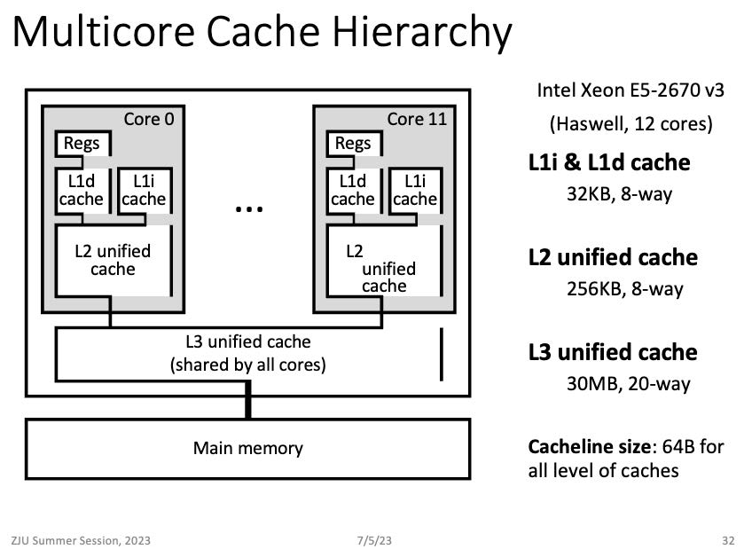 </div> </div> <div class="col"> However, it is somehow still an open question - Modern/Real-World architectures are **complicated** - Turn to use **black-box models** <div class="center"> 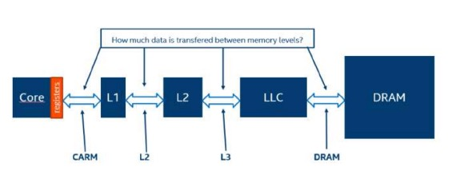 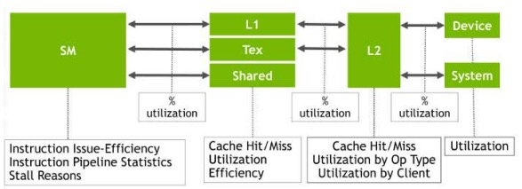 </div> </div> </div> <!--v--> ### Opt. Space Analysis - Roofline Model > The roofline model is an intuitive visual performance model used to provide performance estimates of a given kernel or application, by showing inherent hardware limitations, potential benefit and priority of optimizations. [\[Wikipedia\]](https://en.wikipedia.org/wiki/Roofline_model) - Work - The work $W$ denotes the number of operations performed, and in most cases, $W$ is expressed as FLOPs - Memory traffic - The memory traffic $Q$ denotes the number of bytes of memory transfers incurred during the execution - Arithmetic intensity - The arithmetic intensity $I$ is the ratio of the work $W$ to the memory traffic $Q$ <!--v--> ### Opt. Space Analysis - Roofline Model Roofline model only focus on 1~2 dominant components Example: CPU DRAM Roofline $$ \text{Arithmetic intensity} (I) = \frac{\text{Floating point operaraons (W)}}{\text{Total data movement (Q)}} (\text{FLOPs/Byte}) $$ For Matrix Multiplication of two $n \times n$ matrices - Floating point operaraons = $2n^3$ = $\Omicron(n^3)$ - Total data movement = $3n^2$ = $\Omicron(n^2)$ - Arithmetic intensity $I = \frac{2n^3}{3n^2} = \frac{2}{3}n = \Omicron(n)$ > Williams, Samuel, Andrew Waterman, and David Patterson. "Roofline: an insightful visual performance model for multicore architectures." Communications of the ACM 52.4 (2009): 65-76. <!--v--> ### Opt. Space Analysis - Roofline Model Sustainable performance is bound by $$ P = \min \begin{cases} \pi \\\\ \beta \times I \end{cases} $$ <div class="mul-cols"> <div class="col"> - $P$: Attainable performance - $\pi$: Peak performance - $\beta$: Peak bandwidth - $I$: Arithmetic intensity </div> <div class="col"> <div class="center"> 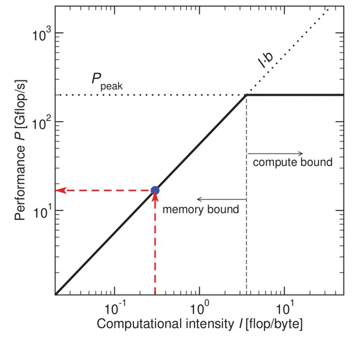 </div> </div> </div> <!--v--> ### Opt. Space Analysis - Roofline Model <div class="center"> 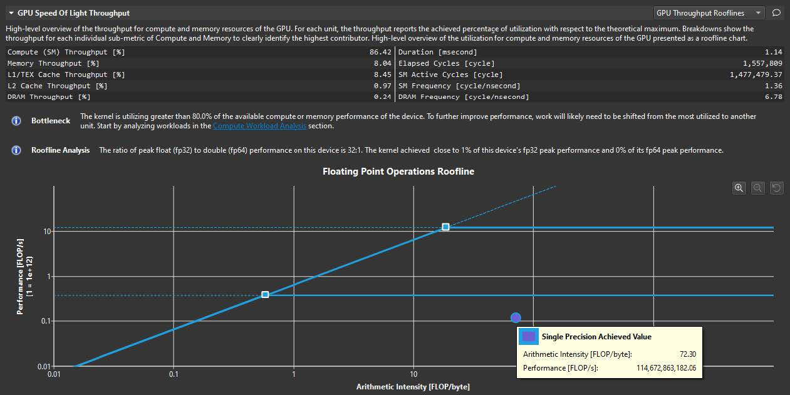 </div> <!--v--> ### Opt. Space Analysis - Other Models Learning-based Statistical Cost Model - Adapt to different hardware type by learning <div class="center"> 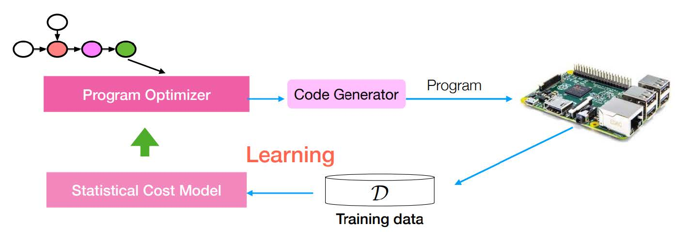 </div> > Chen, Tianqi, et al. "{TVM}: An automated {End-to-End} optimizing compiler for deep learning." 13th USENIX Symposium on Operating Systems Design and Implementation (OSDI 18).2018. <!--s--> <div class="middle center"> <div style="width: 100%"> ## 2.3 Where to optimize? </div> </div> <!--v--> ### Where to optimize? - Amdahl's law The slowest part -> bottleneck/hotspot > Amdahl's law is a formula which gives the theoretical speedup in latency of the execution of a task at fixed workload that can be expected of a system whose resources are improved. [\[Wikipedia\]](https://en.wikipedia.org/wiki/Amdahl%27s_law) Amdahl's law can be formulated in the following way: $$ S_{latency}(s) = \frac{1}{(1 - p) + \frac{p}{s}} \leq \frac{1}{1 - p} $$ - $S_{latency}(s)$: Theoretical speedup of the whole task - $s$: Speedup of the part of the task that benefits from improved system resources - $p$: Proportion of execution time that the part benefiting from improved resources originally occupied <!--v--> ### Hotspot Analysis Use hotspots analysis to find the bottleneck of the program Methods: - Analytical - Hardware simulator - Profile: sampling some usage of a resource by a program - Trace: collecting highly detailed data about the execution <div class="mul-cols"> <div class="col"> <div class="center"> 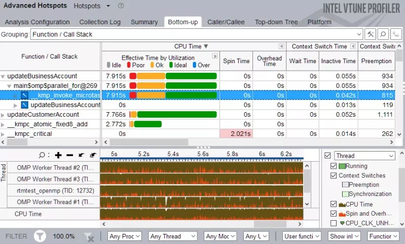 </div> </div> <div class="col"> <div class="center"> 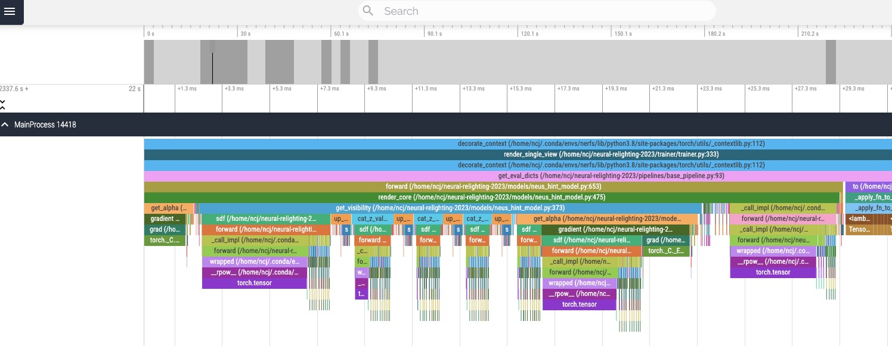 </div> </div> </div> <!--s--> <div class="middle center"> <div style="width: 100%"> ## 2.4 General Optimization Pipeline </div> </div> <!--v--> ### General Optimization Pipeline 1. Determine your baseline code 2. Run performance test 3. Is optimization target reached? (Optimization Space Analysis) 4. Find bottleneck (Hotspot Analysis) 5. Optimize the bottleneck 6. Go to 2. <!--s--> <div class="middle center"> <div style="width: 100%"> # 3 Practical Optimization Stretagies </div> </div> <!--v--> ## Optimization Strategies - Algorithm optimization - reduce complexity - space for time - ... - Code optimization - remove redundancy - reduce precision - ... - Compile/running parameter optimization - Hardware optimization <!--s--> <div class="middle center"> <div style="width: 100%"> ## 3.1 Algorithm Optimization </div> </div> <!--v--> ### Alg. Optimization – Reduce Complexity The following code is the fast inverse square root implementation from Quake III Arena, and the 2nd Newton iteration can be removed to reduce complexity with cost of precision ```c float Q_rsqrt(float number) { long i; float x2, y; const float threehalfs = 1.5F; x2 = number * 0.5F; y = number; i = * ( long * ) &y; // evil floating point bit level hacking i = 0x5f3759df - ( i >> 1 ); // what the fuck? y = * ( float * ) &i; y = y * ( threehalfs - ( x2 * y * y ) ); // 1st iteration // y = y * ( threehalfs - ( x2 * y * y ) ); // 2nd iteration, this can be removed return y; } ``` <!--v--> ### Alg. Optimization – Trade space for time Lookup tables are used to accelerate CRC32 computation. ```c uint32_t poly8_lookup[256] = { 0x00000000, 0x77073096, 0xEE0E612C, 0x990951BA, 0x076DC419, 0x706AF48F, 0xE963A535, 0x9E6495A3, 0x0EDB8832, 0x79DCB8A4, 0xE0D5E91E, 0x97D2D988, 0x09B64C2B, 0x7EB17CBD, 0xE7B82D07, 0x90BF1D91, // ... } ``` <div class="right"> </div> <!--v--> ### Alg. Optimization – Parallelization Sum a large array <div class="center"> 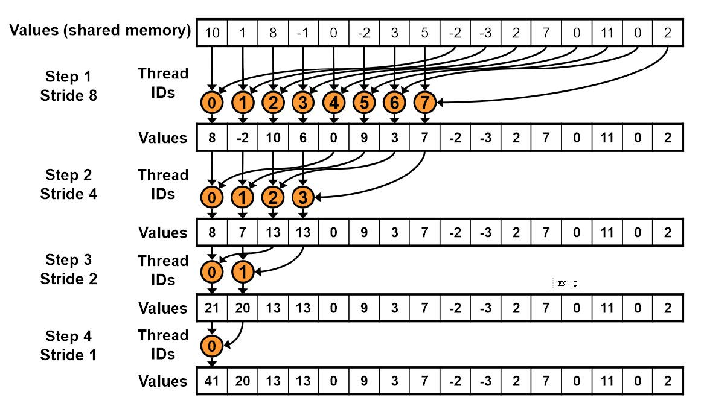 </div> <!--v--> ### Alg. Optimization – Prefetch & Prediction - Locality of high-level logic - Web page prefetching/Data preloading - Contributes to locality at lower-levels - Instruction level - Branch prediction <!--v--> ### Alg. Optimization – Caching - Stores results from previous executions - Directly returns stored results - Requirement: pure function - Return values are identical for identical arguments - Add cache invalidation for non-pure ones - Limited cache size - LRU/Set Associativity <!--v--> ### Alg. Optimization – Lock-Free <div class="mul-cols"> <div class="col"> - Locks are needed for concurrency - However, Lock -> Waiting (e.g. spinlock) - Waste CPU resources - Use atomic primitives - CAS (Compare and Swap) - Atomic_Add - Negative example - GIL in Python </div> <div class="col"> <div class="center"> 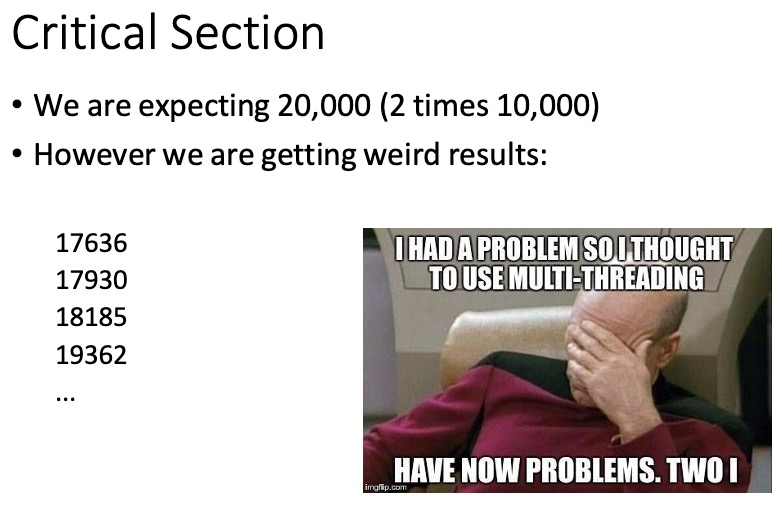 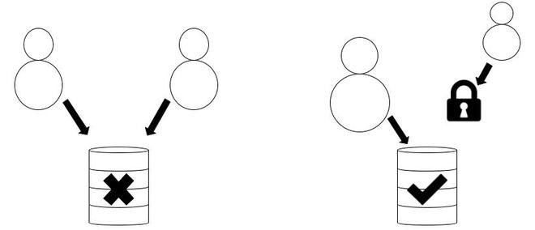 </div> </div> </div> <!--v--> ### Alg. Optimization – Load Balancing Avoid load imbalance (所谓“一核有难，七核围观”) <div class="center"> 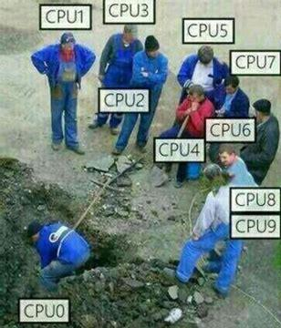 </div> <!--s--> <div class="middle center"> <div style="width: 100%"> ## 3.2 Code Optimization </div> </div> <!--v--> ### Code Optimization – Remove Redundancy <div class="mul-cols"> <div class="col"> Before: ```cpp if (fn(1) >= 0 && fn(1) < 10) { do_fn1_between_0_10(); } else if(fn(1) >= 10 && fn(1) < 1000) { do_fn1_between_10_1000(); } else { do_fn1_unknown_state(); } ``` </div> <div class="col"> After: ```cpp auto fn1val = fn(1); if (fn1val >= 0 && fn1val < 10) { do_fn1_between_0_10(); } else if(fn1val >= 10 && fn1val < 1000) { do_fn1_between_10_1000(); } else { do_fn1_unknown_state(); } ``` </div> </div> <!--v--> ### Code Optimization – Reduce Precision <div class="mul-cols"> <div class="col"> - High-precision data - Take up lots of space - Large computation cost - Consume lots of resources - Save both memory & computation by reducing precision - FP8, FP16, FP32, FP64, FP128 - INT1, INT4, INT8, INT16, INT32, INT64, INT128 - Mix-precision - PyTorch AMP - Transformer Engine </div> <div class="col"> <div class="center"> 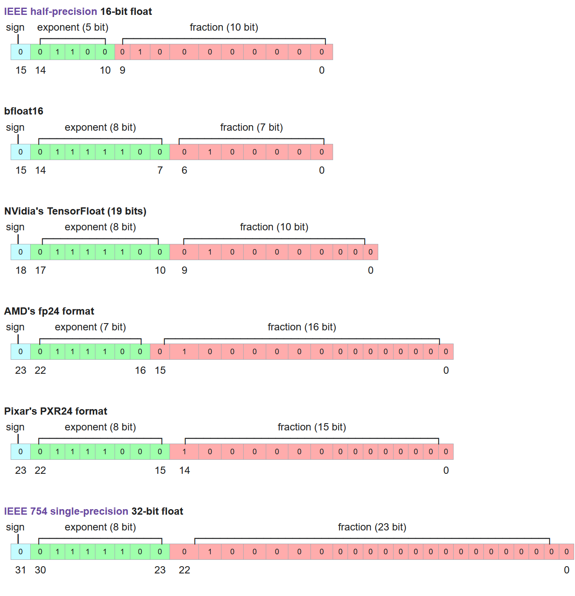 </div> </div> <!--v--> ### Code Optimization – Reduce Branching <div class="mul-cols"> <div class="col"> - Range comparison w/ binary decomposition - Binary Search Tree - Skip List Before: ```cpp assert(v >= 0 && v < 100); if (v >= 75) { // 75..99 } else if (v >= 50) { // 50..74 } else if (v >= 25) { // 25..49 } else { // 0..24 } ``` </div> <div class="col"> After: ```cpp assert(v >= 0 && v < 100); if (v >= 50) { if (v >= 75) { // 75..99 } else { // 50..74 } } else { if (v >= 25) { // 25..49 } else { // 0..24 } } ``` </div> </div> <!--v--> ### Code Optimization – Vectorization What is vectorization? - Scaler computation: $a = 2 \cdot a$ - Vector computation: $\vec{a} = 2 \cdot \vec{a}$ - [a, b, c, d] => [2a, 2b, 2c, 2d] Methods: - High-level: vectorized computation graph - Instruction-level: SIMD instructions Enjoy your lab2~ <!--v--> ### Code Opt. – Optimize Memory Access Locality For GEMM - Blocking - Loop Permutation/Unrolling - Array Packing - ... Enjoy your following labs~ <!--v--> ### Code Optimization – Adjusting Modifiers Just as the `fibonacci` function, we can use `constexpr` and `const` to hint the compiler to optimize the code ```cpp #include <cstdio> static constexpr long long fibonacci(int i) { return i <= 2 ? 1 : fibonacci(i - 1) + fibonacci(i - 2); } int main() { const int k = 5; printf("fib(%d)=%lld\n", k, fibonacci(k)); return 0; } ``` <!--v--> ### Code Opt. – Instruction/Data Alignment - Optimize CPU memory access - Usually done automatically by compilers <div class="center"> 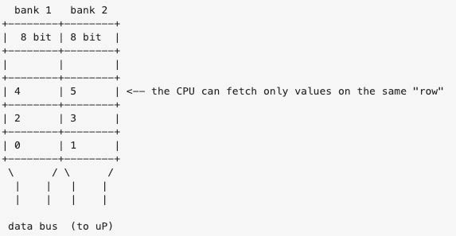 </div> <!--v--> ### Discussion: Man v.s. Compiler When do we need manual optimization? Domain Specific Language <div class="mul-cols"> <div class="col"> <div class="center"> 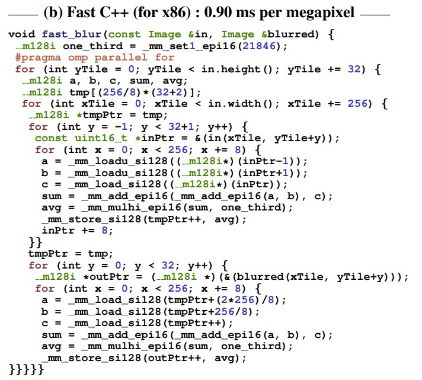 </div> </div> <div class="col"> <div class="center"> 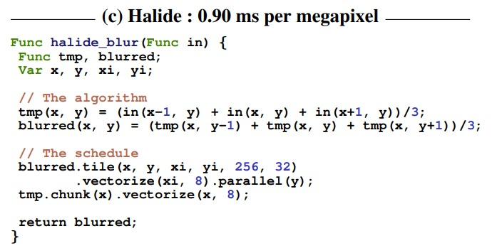 </div> </div> </div> > Ragan-Kelley, Jonathan, et al. "Decoupling algorithms from schedules for easy optimization of image processing pipelines." ACM Transactions on Graphics (TOG) 31.4 (2012): 1-12. <!--s--> <div class="middle center"> <div style="width: 100%"> ## 3.3 Compile/Running Parameter Optimization </div> </div> <!--v--> ### Compile/Running Parameter Tuning - Adjust Running Scale - Adjust Cache Size - Adjust Core Affinity - NUMA <!--v--> ### Is Parameter-tuning Optimization? - Adapts general code to local machine - Auto-tuning - Black-box method: TVM (learning-based), etc. - Analytical: Alpa (Dynamic programming, etc.) <!--s--> <div class="middle center"> <div style="width: 100%"> ## 3.4 Hardware Optimization </div> </div> <!--v--> ### Different Hardware CPU -> GPU -> ASIC/DSA/FPGA <div class="center"> 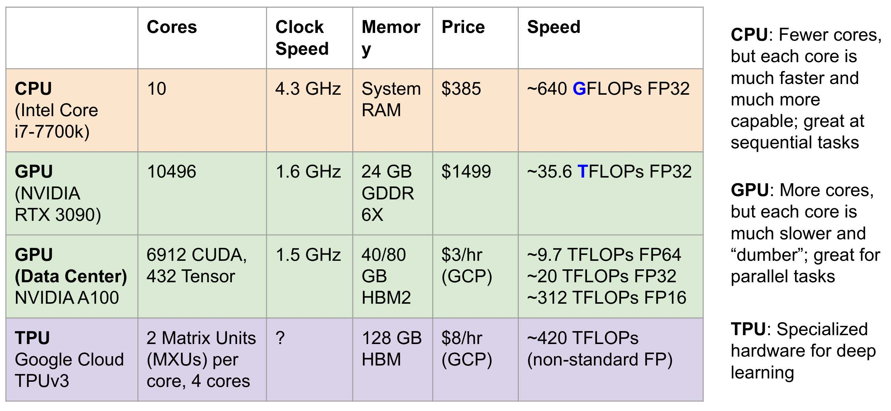 </div> <!--v--> ### Different Hardware (Cont.) <div class="mul-cols"> <div class="col"> <div class="center"> 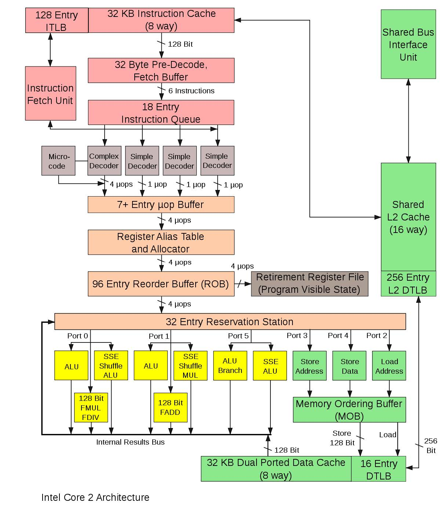 </div> </div> <div class="col"> <div class="center"> 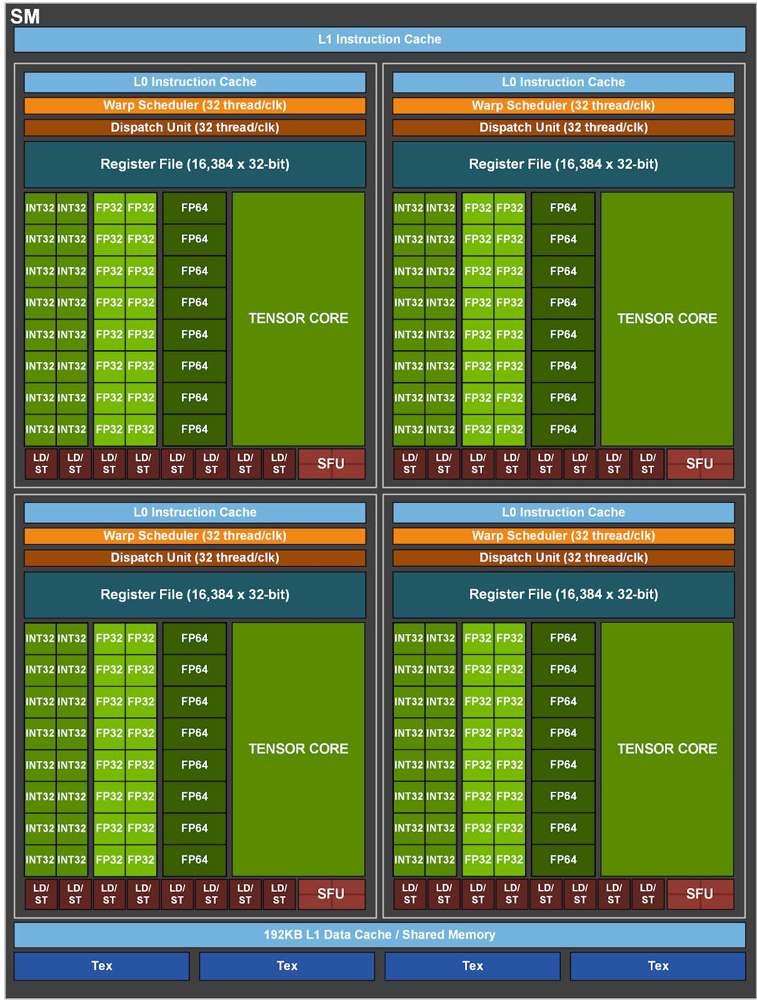 </div> </div> </div> <!--v--> ### Hardware Optimization - DPU [DPU](https://blogs.nvidia.com/blog/whats-a-dpu-data-processing-unit/) - System on a chip that combines - Industry-standard, high-performance, software-programmable multi-core CPU - High-performance network interface - Flexible and programmable acceleration engines <div class="center"> 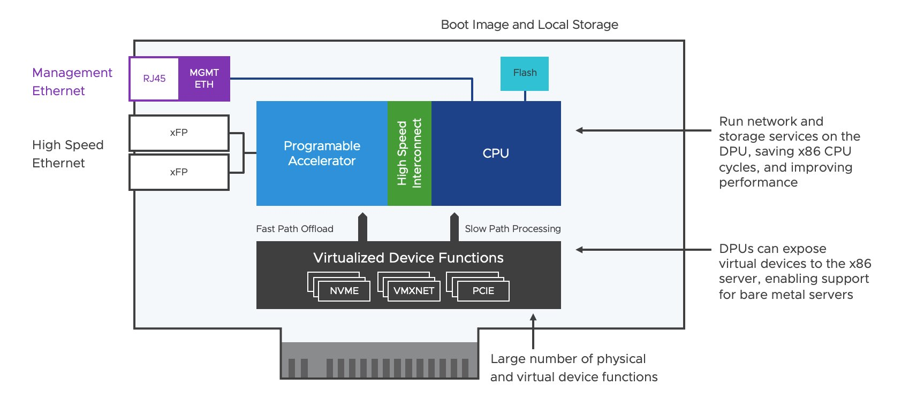 </div> <!--v--> ### Hardware Optimization - GPU Chassis Optimize communication & power usage <div class="mul-cols"> <div class="col"> <div class="center"> 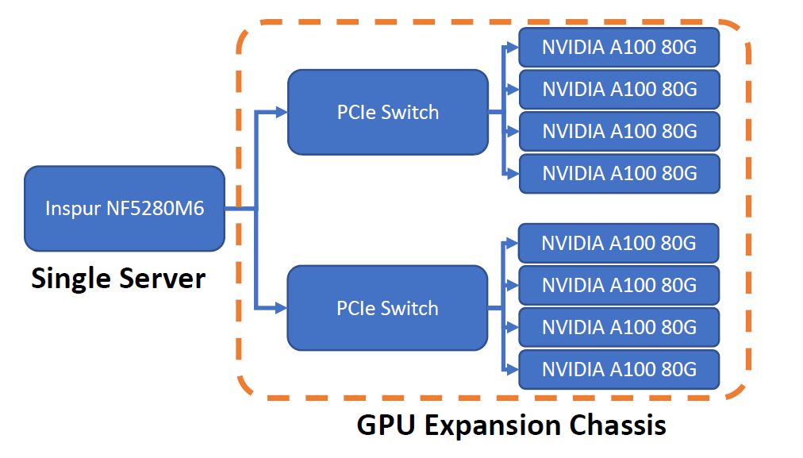 </div> </div> <div class="col"> <div class="center"> 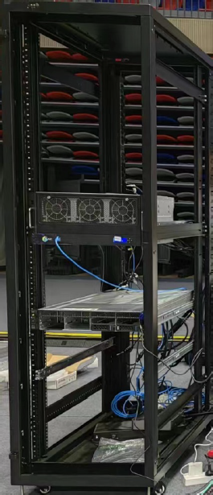 </div> </div> </div> <!--s--> <div class="middle center"> <div style="width: 100%"> # 4 HPC Skill Tree </div> </div> <!--v--> ## HPC Skills - Linux system and common commands - Cluster maintainment and network management - Collaborative development and version control - Script automation - Complex data analysis and processing - Manual compilating and linking of dependent programs - Parallel program design, testing and optimization - Power control and parameter adjustment <!--v--> ## Linux System and Common Commands - Compared with Windows Server, Linux occupies less resources - Generally the operating system used by servers are Linux - Ecosystem: Many scientific computing software only have Linux versions, or have no official support on other systems <div class="center"> 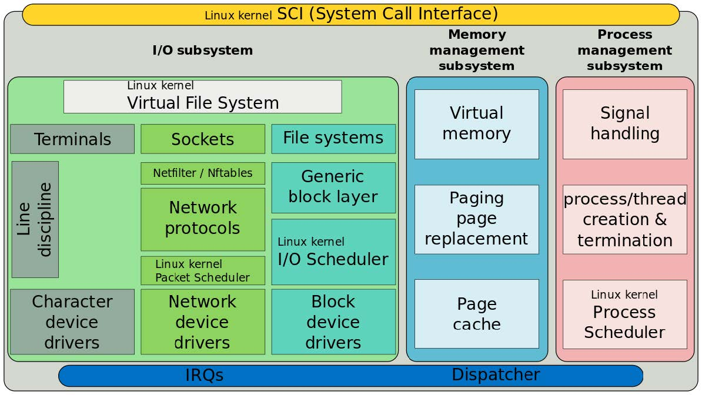 </div> <!--v--> ## Linux System and Common Commands (Cont.) Shells that are commonly used in Linux: - Ash - Bash - Zsh - ... Why we need shells? - In many cases, there is no GUI on servers - To save resources and reduce maintenance costs - Remote GUI access is not provided <!--v--> ## Cluster Maintanence and Network Management Including - (Un)Installation of various software and environment - Software and hardware troubleshooting - Network problem troubleshooting - Job submission & scheduling system (slurm, LSF, Spark...) - Cluster status monitoring - IaaS, PaaS - ... Provide a stable and efficient computing environment Characteristics: troublesome <!--v--> ## Collaborative Dev. and Version Control - Cooperation awareness, team spirit, ... - Use version control software (mainly Git) - Software engineering - Documentation, annotation - Communication skills <!--v--> ## Script Automation When running a script that takes a long time, running it manually requires a lot of effort To ~~be lazy~~ improve efficiency, use automated scripts instead of manual operations - Linux shell scripts - Usually used for simple/general tasks - Scheduling system scripts - Used for job submission and monitoring <!--v--> ## Complex Data Analysis and Processing - Statistics, preprocessing, feature engineering - Graphing - Papers related to specific fields - Big/Massive Data processing capabilities - Understanding of data structures - Data loading skills (e.g., how to load data larger than RAM) Almost every science in modern times is data science Need to read relevant literature to understand the efforts of predecessors <!--v--> ## Manual Compilating and Linking of Programs - Understand the compilation process - Configure the compilation and running environment - Process the dependencies of the program <!--v--> ## Parallel Program Design, Testing and Opt. - Design - Test - Optimize Just as we discussed before, enjoy your following labs <!--v--> ## Power Control and Parameter Adjustment Why do we need power control? - Mainly to meet the needs of competitions and practical applications - In some competitions we participated in, the total power of the cluster cannot exceed 3kW - In some practical applications, the power consumption of the cluster is expected to be as low as possible - Need to obtain the optimal operating parameters Methods: - Adjust the frequency (CPU, GPU, Memory, etc.) - Adjust the fan speed - Adjust the operating scale (such as the batch size) - ... <!--s--> <div class="middle center"> <div style="width: 100%"> # That's all for today<br><br>Thank you for your attention </div> </div>